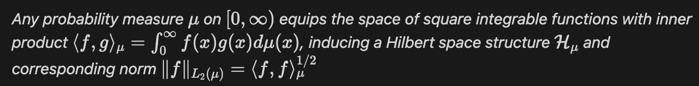
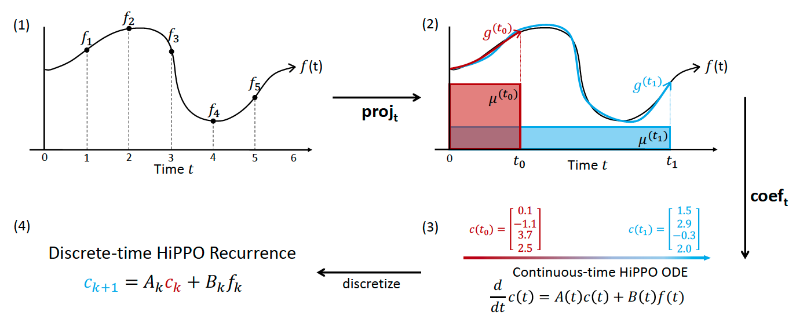
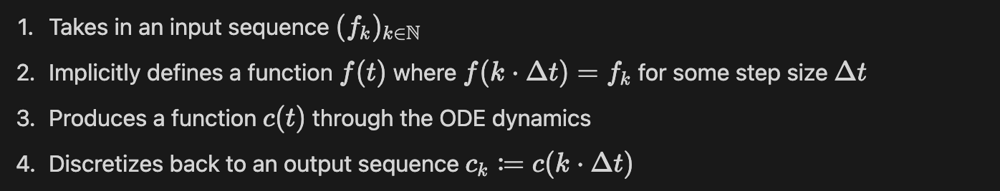
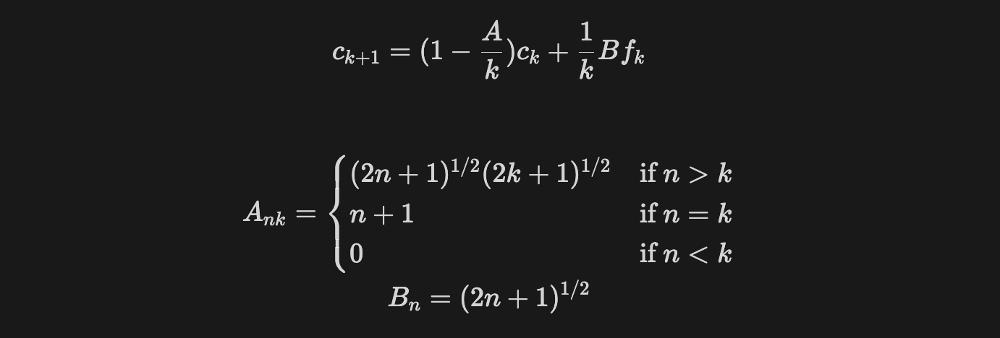
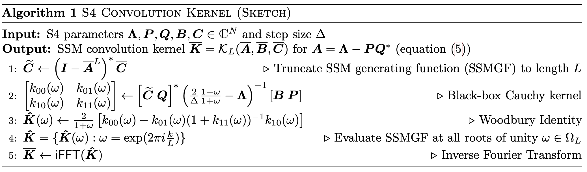
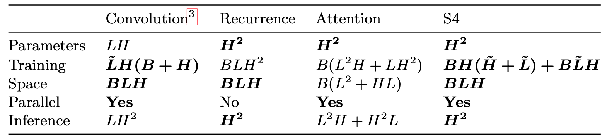
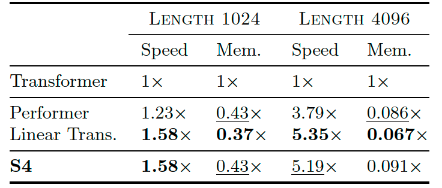

Structured State Space Model
In the last article, I introduced the integration between state space theory and sequence modeling and the naive computational instantiation - linear state space layer (LSSL). By the end, I mentioned the strong direct relationship between model performance and the proper choice of state matrix, as well as the incapability to learn a proper state matrix. In this article, I will focus on the enhancement of LSSL - Structure State Space Model (S4), discussing how S4 overcome the challenge of setting and learning optimal state matrix with HiPPO, and finish with analyzing its complexity and performance.
Structured State Matrix - HiPPO
In this section, we will learn about the HiPPO state matrix, the core feature which enables S4 to achieve state-of-the-art performance in various sequence modeling tasks. We start with the motivation for modeling memory with online function approximation, then move on to three variations of HiPPO matrices.
Motivation
Recalling the concepts of state space model (SSM) from the previous article, we know that the system can only access to histories through the information encapsulated in the current state, so it is necessary for the state vectors to contain information about the cumulative history. However, it is impossible to memorize the entire history at any time point, so memories has to be compressed. As a result, the mission of handling long-term dependency transform into the search of the appropriate memory compression mechanism.
Problem Setup
Gu et.al[2] approached the task of obtaining optimal state matrix by solving it with online function approximation with projection. The problem is formally defined as:
In other words, we aim to approximate the history function by projecting it onto a function subspace determined by a probability measure, and leverage the projection as memory representation.
Let’s talk more about the two main components of this problem setup - probability measure and projection function subspace.
The time-varying probability measure plays an important role of controlling the importance of various parts of the input at every time point. This behavior allows the solutions to dynamically capture the time-dependent features and accurately approximate them.
After selecting a probability measure, we can naturally obtain the function space equipped by the measure.
Any N-dimensional subspace G of this function space is a suitable candidate for approximation, where N corresponds to the order, or size, of the approximation. The projected history can be represented by the N coefficients of its expansion in any basis of G. Naturally, we select the set of orthogonal polynomials for the measure and obtain an orthogonal basis, and consequently the coefficients of the optimal basis expansion are simply
Lastly, the coefficients should evolve as an ODE with dynamics determined by the history function, which we will later find it perfectly match with the state update equation of state space models (SSM).
HiPPO
The approximation problem will be solved by utilizing HiPPO, standing for High-Order Polynomial Projection Operator. HiPPO produces operators that project arbitrary functions onto the space of orthogonal polynomials with respect to a given probability measure. Additionally, HiPPO can produce an optimal solution to a natural online function approximation problem. We will first learn about the general framework, and then move on to discretization and its connection with SSM.
General Framework
Given a probability measure family supported on the range between negative infinity and t, an N-dimensional subspace G of polynomials, and a continuous history function f, HiPPO defines a projection operator and a coefficient extraction operator at every time t, and the composition operator is called hippo.
The projection operator first takes in a function restricted up to time t and maps to a polynomial g in the subspace G such that minimizes the approximation error. The coefficient extraction operator then maps the polynomial g to the coefficients of the basis of orthogonal polynomials defined with respect to the measure. Mentioned in the previous section, the coefficient function has the form of an ODE satisfying
Hence, the solution to the desired coefficient vectors is an ODE with closed-form transition matrices A and B.
We can surprisingly discover that the coefficient ODE is has the exact same form as the state update equation of SSM. The coefficient vectors model the memory at any time point, which is equivalent to the states. The continuous function f brings information about a specific time point to the system, which is equivalent to the inputs of SSM. Consequently, we can obtain that the matrix A is the state transition matrix and matrix B is the input matrix. As a result, solving this coefficient ODE is equivalent of acquiring the SSM we are looking for.
Discretization
Now we know that handling long-term memory with online function approximation with a resolution of HiPPO perfectly fits our goal of long sequence modeling with SSMs. For the next step, discretization is required to transform the continuous framework into computational implementation. The process is summarized as the following steps.
The process is sensitive to the discretization step size. Small step sizes enable the process to focus on fine-grain details of the input, while large step sizes provide a relatively macroscopic view. One benefit of discretization is the improvement in flexibility of handling irregularly-sampled or missing data. Choosing the appropriate step size not only allow the us to capture information at the right scale but also reduce the effects of data deficits.
Choice of Probability Measure
There are two components of HiPPO that require manual definitions, which are the choice of probability measure family and the dimension of projection function subspace. The dimension of projection function subspace determines the complexity and depth of how memory is compressed, and the probability measure controls how the system handles the importance of various part of the memory. In this section, I will talk about the three different variations of HiPPO that use different measure to model history, and discuss the pros and cons according to their performances.
Variation I - HiPPO-LegT
The first variation is called Translated Legendre (LegT). This measure assigns uniform weight to the most recent history, where the hyperparameter theta represents the length of the history being summarized. After applying this measure to the coefficient ODE, we obtain the closed form of matrices A and B as
Variation II - HiPPO-LagT
The second variation is called Translated Laguerre (LagT). This measure uses a exponentially decaying measure to assign more importance to recent history.
Apply this measure to the coefficient ODE, we will obtain the matrix closed forms as
Variation III - HiPPO-LegS
One major behavior we can observe from the previous two measures is that they are both “sliding window” measures, which means that both can effectively handle only a specific range of the most recent history. HiPPO-LegT can only handle history within the range determined by hyperparameter $\theta$, while HiPPO-LagT gradually loss track of long-term history as the weights decay by time. In order to enhance HiPPO with timescale robustness, the author [2] proposed the Scaled Legendre (LegS) variation of HiPPO.
Similar to HiPPO-LegT, HiPPO-LegS assigns uniform weight to the history, but HiPPO-LegS takes all history into consideration.
In order to avoid forgetting memory, the sliding window is scaled over time and hence the = coefficient ODE will be rewrote as
After discretizing the ODE and solving the for the matrix closed forms, we will obtain the following result.
There are three properties about HiPPO-LegS that will help boosting the performance. First, HiPPO-Legs is timescale-equivariant, which means its performance is independent of input timescale. By comparing the discretized coefficient update routines of general HiPPO and HiPPO-LegS, we can discover that one of HiPPO-LegS eliminates the timescale hyperparameter. As a result, not matter how the input is sampled or dilated, the approximation result will not be affected. Second, HiPPO-LegS enables fast recurrence computation. Under any GBT discretization, each recurrence step can be computed in O(N) operations. Lastly, HiPPO-LegS has bounded gradients and approximation error, which is very crucial to the numerical stability of the the model training process.
In this section, we went through the entire process of investigating HiPPO and concluded at HiPPO-LegS, the extension of HiPPO that possesses ideal properties of handling long-term memories. Further researches were done to investigate better training methods and variations of the HiPPO state matrix, but these contents are not included since my understanding cannot afford a concrete elaboration. If you are interested, please refer to [5].
Structured State Space Model
Before we get started with S4, let’s quickly review the major drawbacks of LSSL. First, the proper choice of state matrix and discretization timescale is crucial to the performance, but LSSL does not possess the capability to learn the optimal one. Second, naive LSSL performs repeating matrix multiplication on the state matrix when computing the convolution kernel, requiring expensive O(N^2L) time complexity and O(NL) space complexity. By incorporating a HiPPO-structured state matrix with proper parameterization, S4 resolves these two issues and present state-of-the-art performance in long-range dependency (LRD) tasks.
HiPPO-Structured State Matrix
S4 leveraged the HiPPO-LegS structure to enhance the model’s capability of addressing LRD. The matrix is structured as
Parameterization - Normal Plus Low-Rank
With the memory handling issue solved with the property of HiPPO matrices, the computational complexity issue is solved with the normal plus low-rank (NPLR) parameterization. NPLR parameterization literally decompose HiPPO matrices into the sum of a low-rank and normal matrices, obtaining the following representation:
S4 further leveraged the following routine to optimize computation efficiency for convolution kernel
[1] provides a brief explanation for the routine above, but the content seriously surpass my ability to fully understand it. Hence, please refer to [1] if you are curious about the details of this algorithm.
Computational Complexity
After exploiting the parameterization and optimized computation introduced above, S4 significantly reduce the effort required during training and inference.
Comparing to previous classic sequence modeling models such as CNN, RNN, Attention-based models, and LSSL, S4 displays an overall complexity reduction during every stage of model training and evaluation. The graph below further demonstrates the efficiency of S4 by comparing with the most efficient Transformer-based models, Performer and Linear Transformer. We can observe that S4 is just a bit slower and bigger than the fastest and smallest model, hence can be considered as a very efficient model.
Performance
Lastly, let’s look at the performance of S4. The major highlight of S4 is that it outperforms various prior works in LRD tasks. Unlike prior models can only guess randomly when handling memory beyond their capability thresholds, the integration of HiPPO successfully resolves memory and computational bottlenecks. Additionally, S4 presents an expected feature of a power LRD model. S4 is able to extract more information from the raw data and outperform hand-crafted pre-processing. For instance, S4 achieves an astonishing 98.3% accuracy in raw speech classification, higher than all baselines that use the 100x shorter MFCC features.
In conclusion, S4 strengthens LSSL with the structured HiPPO state matrix, achieving state-of-the-art performance in LRD tasks while presenting a significantly efficient computation complexity. These properties makes S4 the top candidate to apply in the field of sequence modeling, and was further extended to create the revolutionary model - Mamba. Meanwhile, S4 serves as a good start for future studies in related fields, providing researchers with a firm foundation to initiate their discoveries and investigation.
Citation
- Albert Gu, Karan Goel, and Christopher Ré, “Efficiently Modeling Long Sequences with Structure State Spaces” arXiv:2111.00396v3 [cs.LG] 5 Aug 2022
- Albert Gu, Tri Dao, Stefano Ermon, Atri Rudra, and Christopher Ré, “HiPPO: Recurrent Memory with Optimal Polynomial Projections” arXiv:2008.07669v2 [cs.LG] 23 Oct 2020
- Albert Gu, Isys Johnson, Aman Timalsina, Atri Rudra, and Christopher Ré, “How to Train Your HiPPO: State Space Models with Generalized Orthogonal Basis Projections” arXiv:2206.12037v2 [cs.LG] 5 Aug 2022
- HiPPO: Recurrent Memory with Optimal Polynomial Projections
- Hilbert Space Wikipedia
- A Probability Measure Wikipedia
- Gated Recurrent Unit